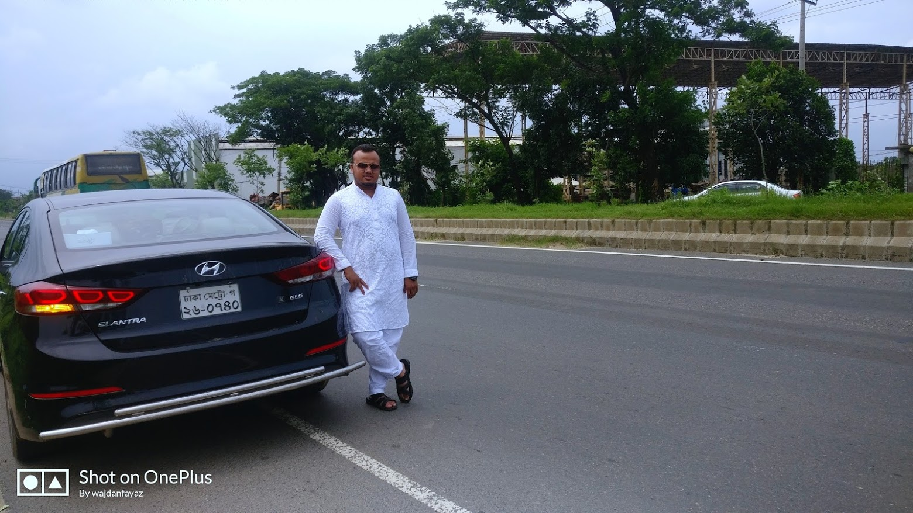

My Hobbies:
- Driving Car:
I have a huge passion in driving cars. At first I started Driving in 2010. But after getting the license, I can move anywhere with the 4 wheeler machine.
Driving is the only thing which never give me a boredom. - Collecting Diecast Cars:
This is my most unique hobby. I have started collecting from 2018 and now I have more than 350+ diecast cars in my collection.
Most of them are from 'Hot Wheels' and some of them are 'Tomica' and 'Matchbox'. This is my most favourite and most expensive hobby. - Trying Different Dishes :
I have tried many types of halal dishes which are available in this country. Actually I am a foodie person and I love to try different types of dishes. Though home food is the best but sometimes it can't beat the outside food in taste. Here I am giving my opinion on top ten most favourite dishes of mine which are available in Dhaka-
- Chicken Broast (Helvetia)
- Kacchi Biriyani (Gulshan Club)
- Tandoori or Grill (Shish Kebab)
- Burger (American Burger)
- Pizza (Cheez)
- Chinese cuisine (Sung-Garden)
- Thai cuisine (Thai Emerald)
- Cake or Pastry (Cooper's /White canary)
- Tea (Ghoroa)
- Falooda (Heerajheel) . - Travelling:
To be honest, I love travelling. Even, I love travelling more than staying in any places. I have travelled almost each district of the east-northern and north-sothern portion of Bangladesh. I have also travelled the Barisal division but unfortunately, I did not travel the Rajshahi division. I hope I will visit those portion so soon. I had a to roam on abroad in 2015. At that time I visited two countries and they were Singapore and Malaysia. I have visited almost every places of Singapore within a week and two states of Malaysia. Actually these experiences give me so much energy for starting something new.
